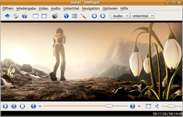

SMPlayer
Dieser Artikel wurde für die folgenden Ubuntu-Versionen getestet:
Ubuntu 16.04 Xenial Xerus
Ubuntu 14.04 Trusty Tahr
Zum Verständnis dieses Artikels sind folgende Seiten hilfreich:
Der SMPlayer  ist eine eigenständige, auf Qt basierende Oberfläche (Frontend) für MPlayer zur Multimedia-Wiedergabe mit zusätzlichen Funktionen. Da keine KDE-Bibliotheken benötigt werden, ist er für Nutzer aller Desktop-Umgebungen geeignet. Besonderheiten des SMPlayers sind u.a. die intuitive Bedienoberfläche und die gute Konfigurierbarkeit.
ist eine eigenständige, auf Qt basierende Oberfläche (Frontend) für MPlayer zur Multimedia-Wiedergabe mit zusätzlichen Funktionen. Da keine KDE-Bibliotheken benötigt werden, ist er für Nutzer aller Desktop-Umgebungen geeignet. Besonderheiten des SMPlayers sind u.a. die intuitive Bedienoberfläche und die gute Konfigurierbarkeit.
Einige der Funktionen sind:
|  |
Sintel  , © copyright Blender Foundation , © copyright Blender FoundationDurian Open Movie Project |
Für Videodateien und DVDs lassen sich entweder global oder dateibezogen speichern: die Wiedergabeposition beim Beenden, die Lautstärke, die Tonspur und die Untertitelauswahl
SMPlayer benötigt keine zusätzlichen Sprachdateien (aktuell in 20 Sprachen übersetzt)
Komfortables Optionsmenü
Video-Equalizer (Kontrast, Helligkeit, Farbe, Sättigung, Gamma)
Audio-Equalizer
Veränderung der Wiedergabegeschwindigkeit (Vielfaches oder Zeitlupe)
Untertitel können beliebig positioniert werden (Größe, Schrift, Farbe u. Sprache frei konfigurierbar)
Die Möglichkeit, in opensubtitles.org
automatisch nach Untertiteln zu suchenOSD-Bildschirmanzeige
Einstellen der Aktion, die beim Klicken oder Doppelklicken ausgeführt wird
Skinbar (Icons und auch Oberfläche (via Konfigurationsmenü, intern durch Qt-style.css))
Karaoke - Wiedergabefunktion
Bildschirmfoto erstellen (.png)
Abspiellisten bzw. Playlists (.m3u)
Weitere Kommandozeilenoptionen können an MPlayer übergeben werden
Fehlerprotokolle (Logs) für SMPlayer und MPlayer
digitale TV-Wiedergabe (DVB)
Hinweis:
Voraussetzung: Die Datei channels.conf muss dazu im Homeverzeichnis im Ordner ~/.mplayer vorhanden sein.
Installation¶
Der SMPlayer ist in den offiziellen Paketquellen enthalten und kann über die folgenden Pakete installiert [1] werden:
smplayer (universe)
smplayer-themes (universe)
 mit apturl
mit apturl
Paketliste zum Kopieren:
sudo apt-get install smplayer smplayer-themes
sudo aptitude install smplayer smplayer-themes
Um die Übersetzung für SMPlayer zu erhalten, muss man bis Trusty das folgende Paket installieren:
smplayer-translations (universe)
mit apturl
Paketliste zum Kopieren:
sudo apt-get install smplayer-translations
sudo aptitude install smplayer-translations
bzw. für Xenial und neuer das Paket:
smplayer-l10n (universe)
mit apturl
Paketliste zum Kopieren:
sudo apt-get install smplayer-l10n
sudo aptitude install smplayer-l10n
PPA¶
Das SMPlayer-Projekt pflegt ein "Personal Package Archiv" (PPA) [2] für den SMPlayer.
Adresszeile zum Hinzufügen des PPAs:
ppa:rvm/smplayer
Hinweis!
Zusätzliche Fremdquellen können das System gefährden.
Ein PPA unterstützt nicht zwangsläufig alle Ubuntu-Versionen. Weitere Informationen sind der  PPA-Beschreibung des Eigentümers/Teams rvm zu entnehmen.
PPA-Beschreibung des Eigentümers/Teams rvm zu entnehmen.
Damit Pakete aus dem PPA genutzt werden können, müssen die Paketquellen neu eingelesen werden.
Nach dem Aktualisieren der Paketquellen erfolgt die Installation wie oben angegeben. Zusätzlich ist ein weiteres Paket verfügbar:
smplayer-skins (ppa)
mit apturl
Paketliste zum Kopieren:
sudo apt-get install smplayer-skins
sudo aptitude install smplayer-skins
Bedienung¶
Über den Menüpunkt "Öffnen" stehen zur Verfügung:
einzelne Dateien
Liste der zuletzt geöffneten Dateien
Verzeichnis
DVD im Laufwerk
Abspiellisten
VCD, Audio CDs, TV, Tuner und anderes mehr
Unter "Wiedergabe" kann die Geschwindigkeit in bis zu 1% kleinen Stufen variiert werden. Außerdem sind Sprünge um jeweils 10 Sekunden vor bzw. zurück möglich.
Der Menüpunkt "Video" erlaubt:
Größenänderung der Wiedergabe
fein abgestufter Zoom
Änderung des Seitenverhältnisses
verschiedene Filter
Drehung um 90° bzw. 180°
Unter "Audio" sind Stereo oder Mehrkanal-Surround-Klang einstellbar. Die Kanalzuordnung kann dann frei gewählt werden. Untertitel sind ebenfalls - je nach Bedarf - einstellbar. Ferner gibt es Navigationsmöglichkeiten in den Kapiteln einer DVD.
Unter "Optionen -> Einstellungen" kann eine Vielzahl von individuellen Einstellungen vorgenommen werden. Da SMPlayer auf MPlayer basiert, siehe auch dort.
SMPlayer mit Lirc steuern¶
Lirc/Tasten mit Funktionen belegen erklärt, wie Programme mit Lirc gesteuert werden. Für SMPlayer gilt für die config-Zeile folgende Syntax:
smplayer -send-action <Anweisung>
Beispiel:
# Wiedergabe/Pause
begin
button = Play
prog = irexec
repeat = 0
config = if [ $(ps -eo cmd | grep -c ^smplayer) -eq 1 ]; then (smplayer -send-action play_or_pause); fi
endDie verwendbaren Steuerungs-Befehle können unter "Optionen -> Einstellungen -> Tastatur und Maus -> Tastatur" in der rechten Spalte "Name" nachgelesen werden. Das etwas unübersichtliche Konstrukt if [ $(ps -eo cmd | grep -c ^smplayer) -eq 1 ]; then ([smplayer-Steuerungsbefehl]); fi sollte überflüssig sein, wenn sowieso nur eine SMPlayer-Instanz läuft. Das lässt sich über "Optionen -> Einstellungen -> Interface -> Prozesse -> Nur einen laufenden SMPlayer-Prozess verwenden" entsprechend einstellen, dann reicht auch der einfache Befehl, in diesem Falle z.B. config = smplayer -send-action play_or_pause.
 Programmübersicht
Programmübersicht- Erstellt mit Inyoka
-
 2004 – 2017 ubuntuusers.de • Einige Rechte vorbehalten
2004 – 2017 ubuntuusers.de • Einige Rechte vorbehalten
Lizenz • Kontakt • Datenschutz • Impressum • Serverstatus -
Serverhousing gespendet von